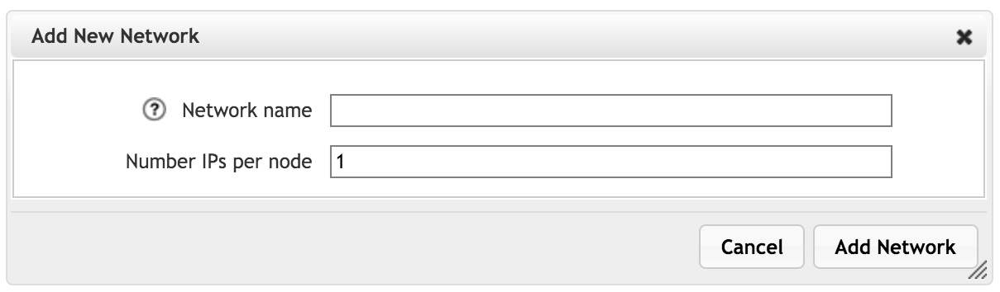
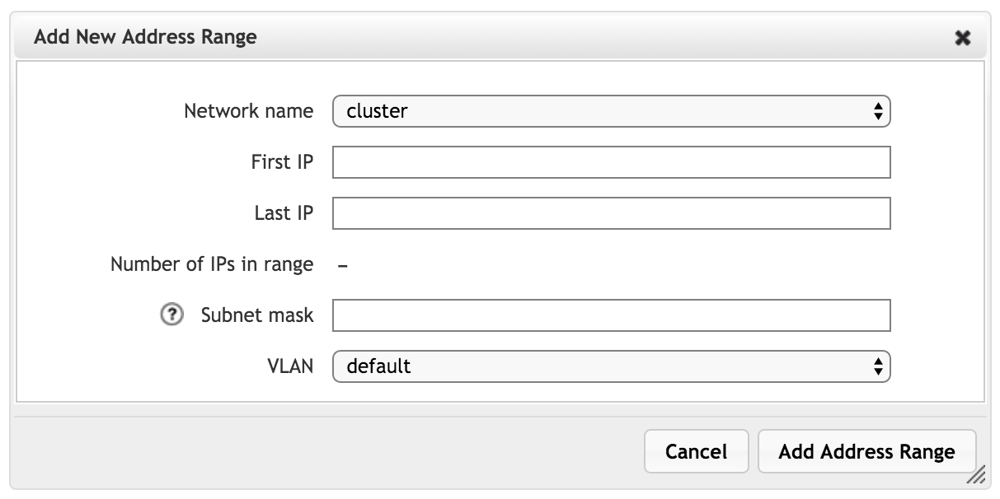

Cluster > Cluster Networks

Use the Cluster Networks page to configure the IP addresses for the nodes in the cluster.
The operation of the cluster depends on having reliable network links among the cluster’s nodes. It is important to configure and test the cluster networks before putting a cluster into production use. Changing IP address ranges or other network settings on a working cluster is risky, and could cause nodes to lose communication with the rest of the cluster temporarily or permanently if errors are made.
The cluster network is used for node-to-node communication. It is also the default network used to communicate with core filers. You can select a different network for a particular core filer on its Core Filer > Core Filer Details page.
Cluster IP addresses must be manually assigned (that is, not assigned by DHCP) and should be in a contiguous range. Use the Cluster Networks page to configure and assign these addresses.
After an IP address has been assigned to a node, the address does not move to another node unless the configuration is changed (for example, the node is permanently removed from the cluster, or the address range or number of IPs per node changes).
One cluster can use multiple cluster networks. All cluster networks that are defined on this page will be used by the cluster as soon as they are created and populated with IP address ranges.
About Cluster Networks and Address Ranges
Each cluster network includes one or more network address ranges. After you create a network and assign the number of IPs per node, you can create one or more address ranges from the Address Ranges panel to assign to the network.
The Cluster Networks page shows two sortable lists. They show similar information, but it is important to understand the difference between the two types of items.
- A Cluster Network is the parent configuration element. It requires a name and a setting for how many IP addresses each node will have.
- Address Ranges specify a range of IP addresses that can be used by one of the cluster networks, along with additional routing information.
When a new address range is created, it must be associated with an existing cluster network.
One cluster network can have multiple address ranges.
Note
If advanced networking is disabled on your cluster, you can have only one cluster network and one address range for that network. The Add and Remove action buttons do not appear for clusters that use basic networking.
Using Non-Contiguous IP Addresses With Multiple Address Ranges
Using multiple address ranges allows you to specify a non-contiguous set of IP addresses in one cluster network. To do this, define one address range for each contiguous subset of IP addresses, and assign all of the ranges to the same cluster network. An address range can be as small as one IP address.
For example, imagine that you want to use 30 IP addresses for cluster nodes, but you do not have 30 contiguous IP addresses available. Instead, you have these IP addresses: 203.0.113.27-36; 203.0.113.40-55; 192.0.2.138-140; 192.0.2.142
You can define four address ranges, one for each uninterrupted range of IP addresses (one of the ranges will hold the single address 192.0.2.142).
Assign each of the four address ranges to the same cluster network as they are created.
Creating Cluster Networks
Caution
Changing cluster network settings is a complicated task, and configuration errors can put the cluster into an unresponsive state that is difficult to recover from. Consult Avere Global Services for assistance before making changes.
To create a cluster network, you must first define the network, and then create IP address ranges that the network uses.
Creating or Changing a Cluster Network
To create a new network, click the Add button next to the cluster network list. You can modify an existing network by selecting it in the list and clicking Modify.
{kind=link}
Note that modifying an existing network can disrupt cluster operation. A warning pops up to remind you that clients might experience disruptions; click OK to continue.
- In the Name field, give the network a unique name.
- In the Number of IPs per node field, specify how many IP addresses the network will allocate to each FXT node.
- Click Add Network when finished, or click Cancel to quit without saving the new network.
Creating or Changing An IP Address Range
To create a new address range, click the Add button next to the Address Ranges list. You can modify an existing range by selecting it in the list and clicking Modify.
{kind=link}
Note that modifying an existing address range can disrupt cluster operation. A warning pops up to remind you that clients might experience disruptions; click OK to continue.
- Use the Network name selector to choose which cluster network will use this address range. This assignment is permanent; the network cannot be changed after the address range is defined. Also, you cannot specify an address range that is not associated with a network.
- Enter the first and last IP addresses in the range by using the fields provided. The number of addresses is automatically calculated.
- In Subnet mask, type the mask to use.
- Use the VLAN field to select which VLAN to use with the addresses in this range.
- Click Add Address Range to save changes or Cancel to quit without saving the address range.